CE103 Algorithms and Programming I
Week-4
Introduction to Code Reusability and Automated Testing
During this course we will use entry level of shared library development and their tests and test automations. Also we will see TDD(Test Driven Development) approach.
During this course we will use Windows OS, Eclipse and Visual Studio Commuity Edition environments for examples.
Each example will include two function
"Hello
sum of two variable function for basic, sum = sum(a,b).
This sum function will add a to b and return result to sum variable.
We will locate them in library and use them from a console application, also we will create unit tests for testing their functionalities and return variables
Shared Library Development
C Programming (Static Library)
Visual Studio Community Edition
In this sample we will create c-lib-sample project that contains library, executable, unit tests and unit test runners.
First of all you install Visual Studio Community Edition from website
Visual Studio 2019 Community Edition - Son Ücretsiz Sürümü İndir
Open visual studio community edition and select create a new project

Select create a new project

Select C++ static library from project list

Name static library project

Default configuration come with C++ project types and setting

In the c-sample-lib.cpp you will sample function
void fncsamplelib()
{
}
Delete pch.h and pch.c files. Also disable use precompiled header settings from configurations and change to "Not Using Precomplied Headers", also you can delete precomplied Header File.

Customize library header name and update "framework.h" to "samplelib.h"
Insert your functions inside the c-sample-lib.c and update header files also.
// c-sample-lib.cpp : Defines the functions for the static library.
//
#include "samplelib.h"
#include "stdio.h"
/// <summary>
///
/// </summary>
/// <param name="name"></param>
void sayHelloTo(char* name){
if (name != NULL){
printf("Hello %s \n",name);
}
else {
printf("Hello There\n");
}
}
/// <summary>
///
/// </summary>
/// <param name="a"></param>
/// <param name="b"></param>
/// <returns></returns>
int sum(int a, int b){
int c = 0;
c = a + b;
return c;
}
also update samplelib.h
#pragma once
#define WIN32_LEAN_AND_MEAN // Exclude rarely-used stuff from Windows headers
void sayHelloTo(char* name);
int sum(int a, int b);
If you check configuration you will see that for C complier we are using Microsoft Environment and Toolkits

Now we can compile our library
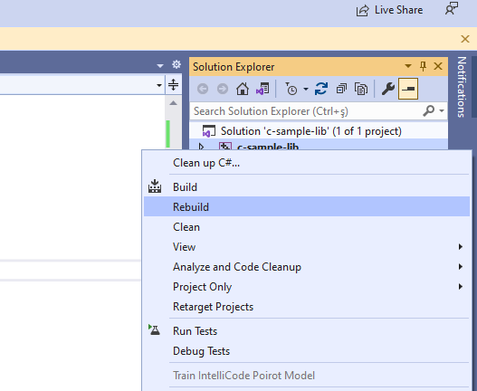
You can follow operation from output window

in debug folder we will see our output

now we will add a console application c-sample-app and use our library
select C++ Windows Console Application from list
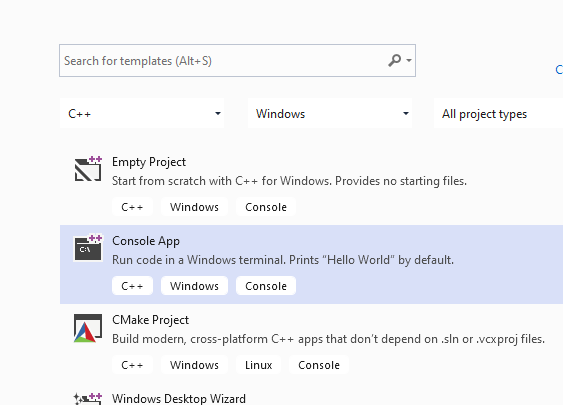
C++ Console Application Selection will generate a C++ console project we can change extension to C to compile our application as C application.
we will convert c-sample-app.c to following code
#include <stdio.h>
/// <summary>
///
/// </summary>
/// <returns></returns>
int main()
{
printf("Hello World!\n");
}
after conversion set c-sample-app as startup project and build it

this will create c-sample-app.exe in the same folder with c-sample-lib.lib library

if we run application we will see only "Hello World"
now we will see two options to add library as references in our application and use its functions.
First option
right click references for c-sample-app and add current library as reference

Select Add Reference

Browse for solution and select c-sample-lib
You can check added reference from references section

now we can include required headers from c-sample-lib folder and use it.
we can include required header with relative path as follow or with configuration
#include <stdio.h>
#include "..\c-sample-lib\samplelib.h"
/// <summary>
///
/// </summary>
/// <returns></returns>
int main()
{
printf("Hello World!\n");
}
we can build our c-sample-app

also we can only write header name
#include <samplelib.h>
for this we need to configure include directories

select c-sample-lib header file location
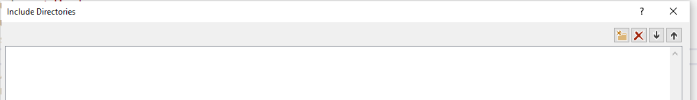
browse for folder

your full path will be added to your configuration

if you add header file paths to your configuration you can use header files by name in your source code
#include <stdio.h>
#include <samplelib.h>
/// <summary>
///
/// </summary>
/// <returns></returns>
int main()
{
printf("Hello World!\n");
}
we can compile the following we don't have problems but here we need to configure relative paths for configuration open include library settings and update with relative path
..\c-sample-lib

now we have portable source code configuration. we can call our functions and then we can update header and library folder configurations.
#include <stdio.h>
#include <samplelib.h>
/// <summary>
///
/// </summary>
/// <returns></returns>
int main()
{
int result = 0;
//printf("Hello World!\n");
result = sum(5, 4);
sayHelloTo("Computer");
printf("Result is %d \n",result);
printf("Press any key to continue...\n");
getchar();
return 0;
}
when you run you will see the following outputs, that mean we called library functions.

static library is a code sharing approach if you want to share your source code with your customers then you can share static libraries and header files together. Another case you can use a precompiled static library with you or this library can be part of any installation then if there is a installed app and static libraries are placed on system folder or any different location then you can use configuration files to set library path and included header paths
Now we can remove project from c-sample-app references but we will set library file in configuration
Before this copy static library and header files to a folder like that
DebugStaticLibDeployment
- Set C/C++ -> General -> Additional Include Directories
There is a bug in configurations and relative path not finding headers so for this reason we will set full path but this is not a good practice for team working
Not Working
..\c-sample-lib\DebugStaticLibDeployment

Working
E:\...\c-lib-sample\c-sample-lib\DebugStaticLibDeployment
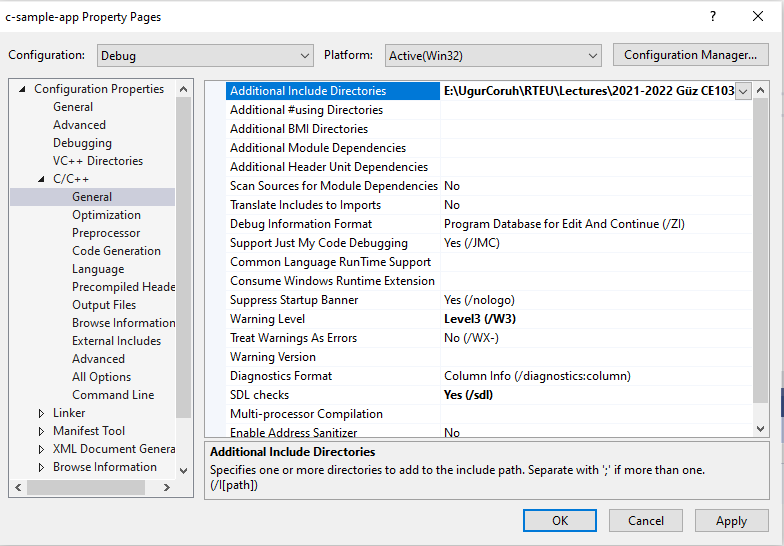
Now we will set library folder that our static library placed
we will set VC++ Directories -> Library Directories
Here is the same issue if we use relative path it doesn't work we need to set full path for library folder
Working
E:\...\c-lib-sample\c-sample-lib\DebugStaticLibDeployment


Not Working
..\c-sample-lib\DebugStaticLibDeployment
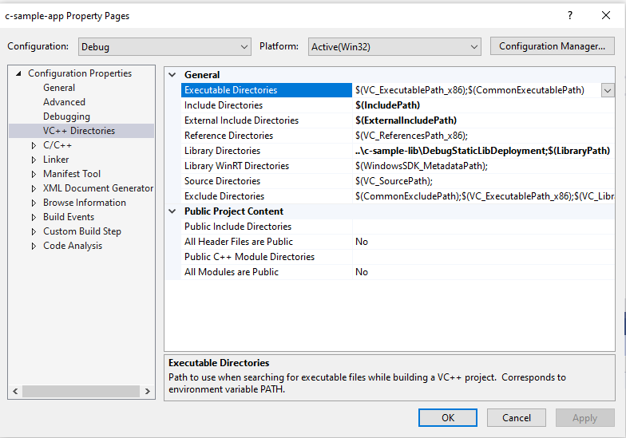
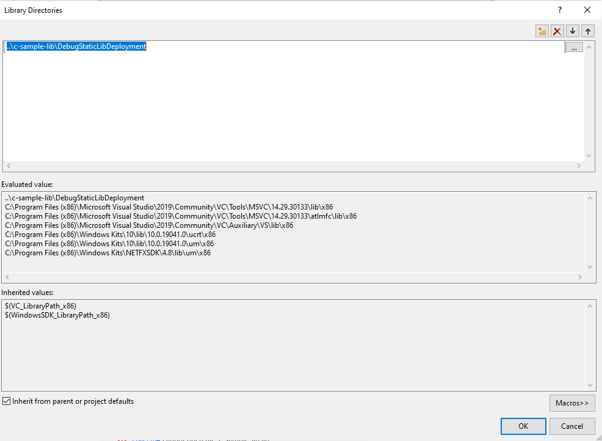

If we set full path for both libraries and headers then we need to set library name for project
Linker->Input->Additional Dependencies

In this case we will compile c-sample-app and we do not need to compile c-sample-lib because we copied output files to different location and they are ready to use.
current source code will be like that nothing changed
#include <stdio.h>
#include <samplelib.h>
/// <summary>
///
/// </summary>
/// <returns></returns>
int main()
{
int result = 0;
//printf("Hello World!\n");
result = sum(5, 4);
sayHelloTo("Computer");
printf("Result is %d \n",result);
printf("Press any key to continue...\n");
getchar();
return 0;
}
and output

There is a option about portability that we can set for team works
We will remove all library related settings from configurations and we will write them in source code
Clear linker->general->additional library directories
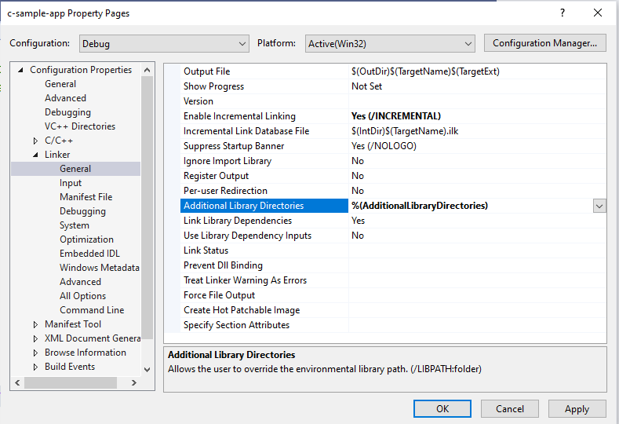
Clear C/C++ -> General -> Additional Include Directories

Clear Linker->Input->Additional Dependencies

Now we can set this configurations in source code as follow
#pragma comment(lib, "..\\DebugStaticLibDeployment\\c-sample-lib.lib")
#include "..\DebugStaticLibDeployment\samplelib.h"
#include <stdio.h>
/// <summary>
///
/// </summary>
/// <returns></returns>
int main()
{
int result = 0;
//printf("Hello World!\n");
result = sum(5, 4);
sayHelloTo("Computer");
printf("Result is %d \n",result);
printf("Press any key to continue...\n");
getchar();
return 0;
}
with this configuration if your friends download this code then they can run them with their environment without setting a path.
C++ Programming (Static Library)
Visual Studio Community Edition
All steps are similar with C programming above, but you do not need to delete pch.h
You should take care about compiled source codes
for example if your code is compiled for x86 then your application also should use the x86 configuration else x64 then library should be x64 complied version.
Source will look like the following
// cpp-sample-app.cpp : This file contains the 'main' function. Program execution begins and ends there.
//
#pragma comment(lib, "..\\DebugStaticLibDeployment\\cpp-sample-lib.lib")
#include "..\DebugStaticLibDeployment\samplelib.h"
#include <iostream>
int main()
{
std::cout << "Hello World!\n";
int result = 0;
//printf("Hello World!\n");
result = sum(5, 4);
sayHelloTo("Computer");
printf("Result is %d \n", result);
printf("Press any key to continue...\n");
getchar();
return 0;
}
C/C++ WSL Option
Install WSL
GitHub - ucoruh/ns3-wsl-win10-setup: ns3 windows 10 WSL2 setup and usage
Create a Linux project

Configure Platform Toolset to WSL

Select GCC for Windows Subsystem for Linux

Put a breakpoint and run debugger

In the debugger for WSL you can use local WSL installation but if you want to run it on Release setting it require a SSH connection.
Configure SSH parameters

so you have to complete the following steps.
C/C++ Remote Linux Option over SSH
Enable SSH
SSH on Windows Subsystem for Linux (WSL) | Illuminia Studios
Connect to Remote WSL Environment
Bağlan hedef Linux sisteminize Visual Studio | Microsoft Docs
C# Programming (Dinamik Library)
Visual Studio Community Edition
In C# project we will create class library we have several options
for this sample we will select .NET core that we can build cross platform library

There is no static library option

We will select .Net Core 3.1

You will have default empty class library file

In the project you can see .NETcore reference

We can build empty class library that generate dll for our application

Now we will add Console Application but this will also use .NETCore
Select New Project

Name the project

Select .NETCore framework

You will have the following sample main.cs file
using System;
namespace csharp_sample_app
{
class Program
{
static void Main(string[] args)
{
Console.WriteLine("Hello World!");
}
}
}
Now we can link projects with adding references open reference section

browse for class library project output folder and select output dll file for console application

now we can update our library code and use it in console application
copy following sample to sampleLibClass file in the library
using System;
namespace csharp_sample_lib
{
public class sampleLibClass
{
public static void sayHelloTo(string name)
{
if (!String.IsNullOrEmpty(name))
{
Console.WriteLine("Hello " + name);
}
else
{
Console.WriteLine("Hello There");
}
}
public static int sum(int a, int b)
{
int c = 0;
c = a + b;
return c;
}
}
}
after this operation copy following sample to console application and build app then you can run
using csharp_sample_lib;
using System;
namespace csharp_sample_app
{
class Program
{
static void Main(string[] args)
{
Console.WriteLine("Hello World!");
sampleLibClass.sayHelloTo("Computer");
int result = sampleLibClass.sum(5, 4);
Console.WriteLine("Results is" + result);
Console.WriteLine("Results is {0}", result);
Console.Read();
}
}
}
You will see following output that mean we called DLL functions

Also we can publish this console application with dll for linux environment or others
for linux environment we should install .NETCore
follow the link below or commands that I shared with you as below for deployment
How to Install Dotnet Core on Ubuntu 20.04 – TecAdmin
Step 1 – Enable Microsoft PPA
wget https://packages.microsoft.com/config/ubuntu/20.04/packages-microsoft-prod.deb
sudo dpkg -i packages-microsoft-prod.deb
Step 2 – Installing Dotnet Core SDK
sudo apt update
sudo apt install apt-transport-https
sudo apt install dotnet-sdk-3.1
Step 3 – Install Dotnet Core Runtime Only
To install .NET Core Runtime on Ubuntu 20.04 LTS system, execute the commands:
sudo apt update
To install the previous version of .Net core runtime 2.1, type:
sudo apt install dotnet-runtime-2.1
Press “y” for any input prompted by the installer.
Step 4 – (Optional) Check .NET Core Version
You can use dotnet command line utility to check installed version of .NET Core on your system. To check dotnet version, type:
dotnet --version
Now we will publish our application as single executable
Open publish menu

Select netcoreapp3.1 and Release for linux-x64

Select produce single file
After succesfull publish you will have linux binary that you can run with WSL

Open WSL and enter the path where this folder located
and run application as follow

check dotnet --version and then run application
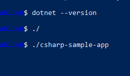
you will see similar output

In this sample we created single application from settings lets try with shared library located option uncheck the "produce single file" option and publish again.
Then you will have the following outputs

If you run csharp-sample-app
you will have the same output

Java Programming
Eclipse IDE
You should download and install eclipse installer and then you should select Eclipse IDE for Java Developers
Eclipse Installer 2021-09 R | Eclipse Packages


select create a project

select java project

give project name

select finish

first we need to add a default package to keep everything organized

then we can create our class that includes our functions

give class a name

you will have following class with main

We will create sample java library with static functions as below.
package ce103;
import java.io.IOException;
public class JavaSampleLib {
public static void sayHelloTo(String name) {
if(name.isBlank() || name.isEmpty())
{
System.out.println("Hello "+name);
}else {
System.out.println("Hello There");
}
}
public static int sum(int a,int b)
{
int c = 0;
c = a+b;
return c;
}
public static void main(String[] args) {
// TODO Auto-generated method stub
System.out.println("Hello World!");
JavaSampleLib.sayHelloTo("Computer");
int result = JavaSampleLib.sum(5, 4);
System.out.println("Results is" + result);
System.out.printf("Results is %d \n", result);
try {
System.in.read();
} catch (IOException e) {
// TODO Auto-generated catch block
e.printStackTrace();
}
}
}
also we can add main method to run our library functions. If we run this file its process main function

we can see output from console as below

There is no exe files java runtime environment run class files but we can export this as an executable.
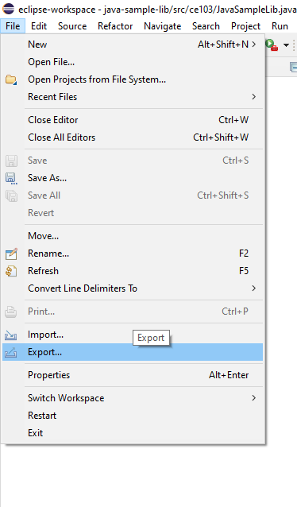
Select Java->Runnable JAR File

click next and set output path for jar file
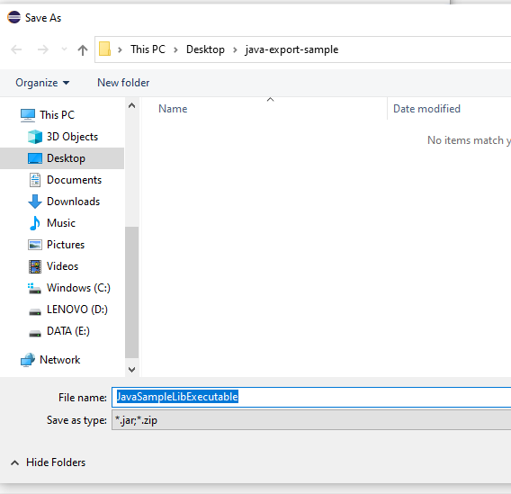
If our project has several external dependecy then we can extract this required files (jar, so, dll) in seperated folder or we can combine them and generate a single executable jar
Lets pack everthing together, Select launch configuration that has main function

end of this operation we will have the following jar that we can by click

When you click application if cannot run then try command line to see problem
enter jar folder and run the following command
java -jar JavaSampleLibExecutable.jar

In my case eclipse build JDK is newer than that I installed and set for my OS
If we check version we can see problem Java version 1.8.0_231

We can found installed and builded JDK for our application from Eclipse setting

select environments

select installed JRE or JDK

you can see installed JRE or JDK home
C:\Program Files\Java\jdk-16.0.1

Open system environment to fix this problem


Check user settings first


Check system settings


we will move up the JDK 16 configuration then command line will run first java

Also in system setting check JAVA_HOME

After this settings close current command line and open new one
write
java --version
if you see java version updated and 16.0.1 then settings are correct

and now if we enter and run application as follow we will see output

But when you click this jar its not running as you see so we have options to provide a clickable application there
Launch4j is an option here
Launch4j - Cross-platform Java executable wrapper

you can watch this tutorial also
How to convert jar to exe using Launch4J Full explanation - YouTube
Download and install launch4j and open application

configure your application settings similar to below select jar file and exe output path

we can customize main class if have multiple main class

select console from setting for this application

we can provide a single running application, this setting avoid to run multiple instances

we need to set runtime environment versions

you can set system parameters before running application

with splash screen you can show a splash screen image for your application

File attributes such as version product information is configured from version info tab

if your application runtime condition has an error then you can show this customized messages also
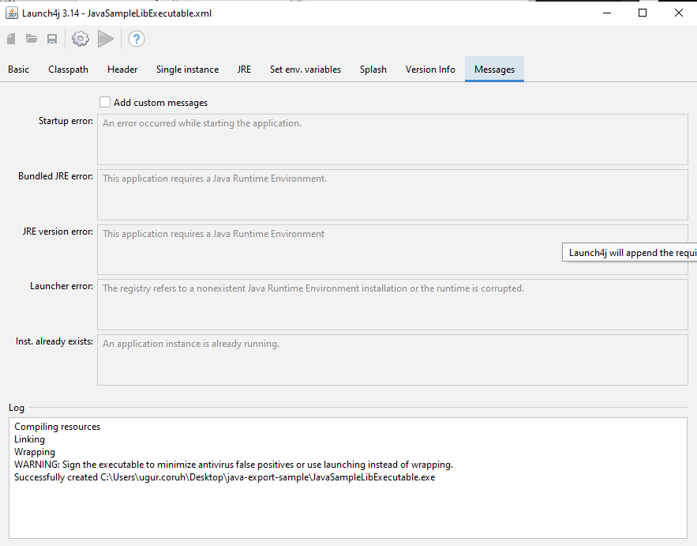
with this options save configuration file xml
and compile settings

you will see generated output file in log screen
Compiling resources
Linking
Wrapping
WARNING: Sign the executable to minimize antivirus false positives or use launching instead of wrapping.
Successfully created C:\Users\ugur.coruh\Desktop\java-export-sample\JavaSampleLibExecutable.exe
now we can run exe by click


another option here adding a bat file to run current jar file
JavaSampleLibExecutable.bat
java -jar JavaSampleLibExecutable.jar

if we click bat file then we will automate command line task for current jar file

Now return back to our java library and create another console application that use library functions


you can set libraries in this step from but our library should exported for our solution

Select Add External JARs...

Open Exported jar folder and select
Or we can select by Add jar from current workspace


but in this step I won't add anything I'll add references later

we will have the following project

lets create a package


and lets create a main class for our application

check create main function
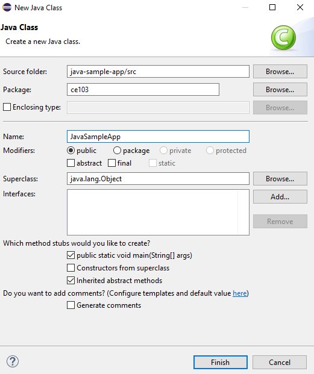

right click to project and add reference

you can enter same configurations from project properties

Lets export our library as a JAR file and then add to our classpath

Select JAR file

we configured output as
C:\Users\ugur.coruh\Desktop\java-export-sample\JavaSampleLib.jar


In the same export folder now we have JavaSampleLib.jar

return back to java-sample-app and then add this jar file to our project
Build Path->Add External Archives
you will see its added to reference libraries

in our JavaSampleApp.java we can use the following source codes
package ce103;
import java.io.IOException;
public class JavaSampleApp {
public static void main(String[] args) {
// TODO Auto-generated method stub
System.out.println("Hello World!");
JavaSampleLib.sayHelloTo("Computer");
int result = JavaSampleLib.sum(5, 4);
System.out.println("Results is" + result);
System.out.printf("Results is %d \n", result);
try {
System.in.read();
} catch (IOException e) {
// TODO Auto-generated catch block
e.printStackTrace();
}
}
}
When we run application we will see similar output

Lets export this application with its dependent library
Select runnable jar

Set Launch configuration and Export destination
C:\Users\ugur.coruh\Desktop\java-export-sample\JavaSampleAppSingle.jar

In this option we will have single jar file
In the export folder we do not see reference libraries
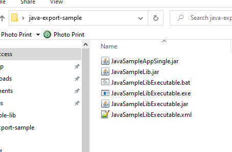
and we can run with command line

only change copy required libraries setting and then give a new name for new jar file and export
C:\Users\ugur.coruh\Desktop\java-export-sample\JavaSampleAppMultiple.jar

now we have a folder that contains our libraries referenced

in this file we can find our library
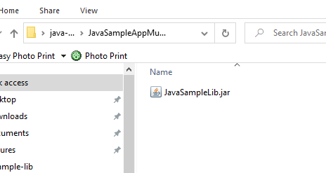
if we test our application we will see it will work

if we delete JavaSampleLib.jar and then try running application we will get error

Program Testing
Unit Test Development
C Unit Tests
Visual Studio Community Edition
C++ Unit Tests
Visual Studio Community Edition
C/C++ için birim testleri yazma - Visual Studio (Windows) | Microsoft Docs
Use cpp-sample-lib project and add

select Native Unit Test
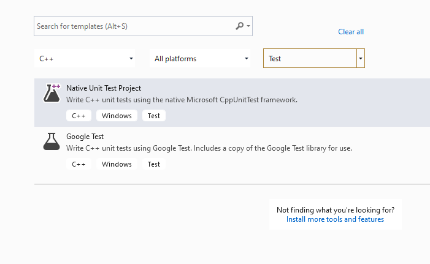
set project path and name

you will have cpp-sample-test project
add library project from references

Add cpp-sample-lib to cpp-sample-test project

cpp-sample-test.cpp
#include "pch.h"
#include "CppUnitTest.h"
#include "..\cpp-sample-lib\samplelib.h"
using namespace Microsoft::VisualStudio::CppUnitTestFramework;
namespace cppsampletest
{
TEST_CLASS(cppsampletest)
{
public:
TEST_METHOD(TestSumCorrect)
{
Assert::AreEqual(9, sum(4, 5));
}
TEST_METHOD(TestSumInCorrect)
{
Assert::AreEqual(10, sum(4, 5));
}
};
}

C# Unit Tests
Visual Studio Community Edition (MSTestV2+.Net)
Install extension fine code coverage
https://marketplace.visualstudio.com/items?itemName=FortuneNgwenya.FineCodeCoverage
Create a .Net Framework Library

set project framework and path

Create library functions

using System;
using System.Collections.Generic;
using System.Text;
namespace cs_lib_sample
{
public class SampleLibClass
{
public static string sayHelloTo(string name)
{
string result = String.Empty;
if (!String.IsNullOrEmpty(name))
{
result = "Hello " + name;
}
else
{
result = "Hello There";
}
Console.WriteLine(result);
return result;
}
public static int sum(int a, int b)
{
int c = 0;
c = a + b;
return c;
}
public int multiply(int a, int b)
{
return a * b;
}
}
}
right click and then create unit test project
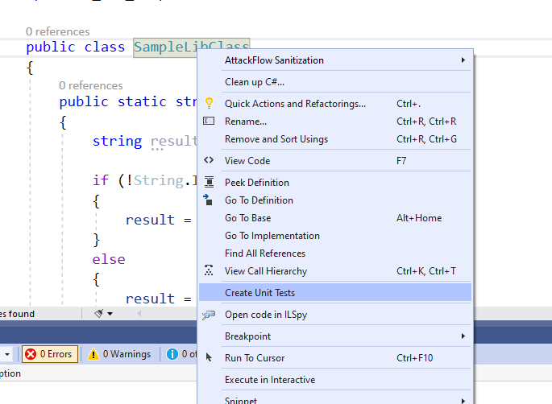
press OK

enter test code
using Microsoft.VisualStudio.TestTools.UnitTesting;
using cs_lib_sample;
using System;
using System.Collections.Generic;
using System.Linq;
using System.Text;
using System.Threading.Tasks;
namespace cs_lib_sample.Tests
{
[TestClass()]
public class SampleLibClassTests
{
[TestMethod()]
public void testSayHelloTo()
{
Assert.AreEqual("Hello Computer", SampleLibClass.sayHelloTo("Computer"), "Regular say hello should work");
}
[TestMethod()]
public void testSayHelloToWrong()
{
Assert.AreEqual("Hello All", SampleLibClass.sayHelloTo("Computer"), "Regular say hello won't work");
}
[TestMethod()]
public void testSumCorrect()
{
Assert.AreEqual(9, SampleLibClass.sum(4, 5), "Regular sum should work");
}
[TestMethod()]
public void testSumWrong()
{
Assert.AreEqual(10, SampleLibClass.sum(4, 5), "Regular sum shouldn't work");
}
[TestMethod()]
public void testMultiply()
{
SampleLibClass sampleLib = new SampleLibClass();
Assert.AreEqual(20, sampleLib.multiply(4, 5), "Regular multiplication should work");
}
}
}
Run tests
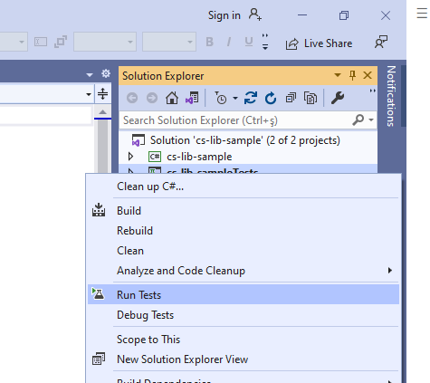
you will code coverage and entered or passed branches

Visual Studio Community Edition (NUnit+.NETCore)
use cshar-sample-lib for this example
create and add a unit test project to solution


Add project reference


SampleLibraryTestClasss in NUnit Project
using csharp_sample_lib;
using NUnit.Framework;
namespace csharp_sample_lib_test
{
public class SampleLibraryTestClass
{
sampleLibClass sampleLib;
[SetUp]
public void Setup()
{
sampleLib = new sampleLibClass();
}
[Test]
public void testSayHelloTo()
{
Assert.AreEqual("Hello Computer", sampleLibClass.sayHelloTo("Computer"), "Regular say hello should work");
}
[Test]
public void testSayHelloToWrong()
{
Assert.AreEqual("Hello All", sampleLibClass.sayHelloTo("Computer"), "Regular say hello won't work");
}
[Test]
public void testSumCorrect()
{
Assert.AreEqual(9, sampleLibClass.sum(4, 5), "Regular sum should work");
}
[Test]
public void testSumWrong()
{
Assert.AreEqual(10, sampleLibClass.sum(4, 5), "Regular sum shouldn't work");
}
[Test]
public void testMultiply()
{
Assert.AreEqual(20, sampleLib.multiply(4, 5), "Regular multiplication should work");
}
}
}
sample class library
using System;
namespace csharp_sample_lib
{
public class sampleLibClass
{
public static string sayHelloTo(string name)
{
string result = String.Empty;
if (!String.IsNullOrEmpty(name))
{
result = "Hello " + name;
}
else
{
result = "Hello There";
}
Console.WriteLine(result);
return result;
}
public static int sum(int a, int b)
{
int c = 0;
c = a + b;
return c;
}
public int multiply(int a, int b)
{
return a * b;
}
}
}
Open test explorer and run tests
or you can run from project

Also we can create unit test from library class,
right click the sampleLibClass and select create unit tests but this option do not provide nunit tests.

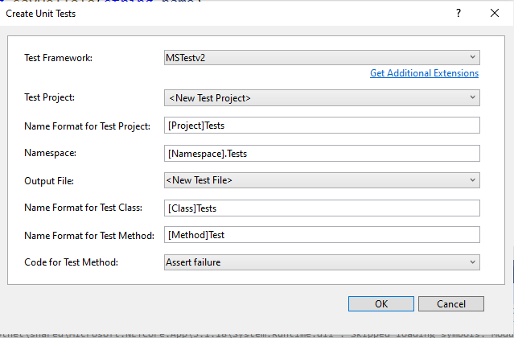


using Microsoft.VisualStudio.TestTools.UnitTesting;
using csharp_sample_lib;
using System;
using System.Collections.Generic;
using System.Text;
namespace csharp_sample_lib.Tests
{
[TestClass()]
public class sampleLibClassTests
{
[TestMethod()]
public void sayHelloToTest()
{
Assert.Fail();
}
[TestMethod()]
public void sumTest()
{
Assert.Fail();
}
[TestMethod()]
public void multiplyTest()
{
Assert.Fail();
}
}
}
we will not commit this changes and continue from nunit test project, the fine code
coverage also work for nunit test but not provide inline highlighting
if we run tests we will have the following outputs


Inline code highlight is part of enterprise visual studio edition
Analyzing code coverage in Visual Studio - DEV Community
TL;DR
Additional information you can use OpenCover + Nunit Runner + Report Generator together to setup a code coverage report but it has complex batch running process. After a few try I decided to use fine code coverage but here is the usage not tested well.
First unit test runner tool doesn't support .Net Core
Follow the instructions on the link
CMD OpenCover · sukhoi1/Useful-Notes Wiki · GitHub
Install OpenCover, ReportGenerator, Nunit,Runners packages then use the package installation folder to get tools that you need
Here is a sample for open cover, select package and copy path

Goto path and tools
C:\Users\ugur.coruh\.nuget\packages\opencover\4.7.1221
You need to setup some batch similar with following
run-test-coverage.bat
set pathA=C:\Users\ugur.coruh\.nuget\packages\opencover\4.7.1221\tools
set pathB=C:\Users\ugur.coruh\.nuget\packages\nunit.consolerunner\3.12.0\tools
set pathC=C:\Users\ugur.coruh\.nuget\packages\reportgenerator\4.8.13\tools\netcoreapp3.0
set dllpath=C:\Users\ugur.coruh\Desktop\csharp-sample-lib\csharp-sample-lib-test\bin\Debug\netcoreapp3.1
"%pathA%\OpenCover.Console.exe" ^
-targetargs:"%dllpath%\csharp-sample-lib-test.dll" ^
-filter:"+[csharp-sample-lib*]* -[*test]*" ^
-target:"%pathB%\nunit3-console.exe" ^
-output:"%dllpath%\coverReport.xml" ^
-skipautoprops -register:user && "%pathC%\ReportGenerator.exe" -reports:"%dllpath%\coverReport.xml" -targetdir:""%dllpath%\coverage"
pause
but nunit3-console.exe gives error


for this compatibility issues I prefer to use fine code coverage extension.
OpenCover related studies
Code coverage of .NET Core unit tests with OpenCover – Automation Rhapsody
Sample OpenCover report
Download and Setup OpenCover, NUnit Console, Report Generator without Package Manager
You can also download the tools from github project pages and install on your operating system,
OpenCover
Releases · OpenCover/opencover · GitHub


Select advanced and then install for all users


ReportGenerator
Release ReportGenerator_4.8.13 · danielpalme/ReportGenerator · GitHub


NUnit Console


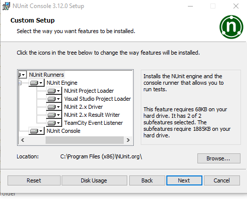
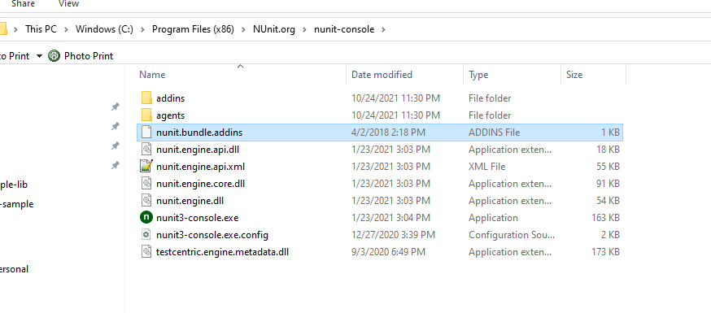
NUnit + MSTest Batch Report Generation (Not Tested)
OpenCover and ReportGenerator Unit Test Coverage in Visual Studio 2013 and 2015 – CodeHelper.Net
OpenCover and ReportGenerator Unit Test Coverage in Visual Studio 2013 and 2015 - CodeProject
Java Unit Tests
Eclipse IDE (JUnit4 , JUnit5)
In this sample we will create two example for similar library
Please check the following links
JUnit 5 tutorial - Learn how to write unit tests
https://www.eclemma.org/
JUnit Hello World Example - Examples Java Code Geeks - 2021
https://yasinmemic.medium.com/java-ile-unit-test-yazmak-birim-test-ca15cf0d024b
Java Application + JUnit
In normal java application we can right click the project java-sample-lib and add Junit case


and you will have the following test class

Now we will create tests that check our function flowchart and return values
We need to cover all code branches that we coded
I have updated JavaSampleLib.java as follow to check outputs
JavaSampleLib.java
package ce103;
public class JavaSampleLib {
public static String sayHelloTo(String name) {
String output = "";
if(!name.isBlank() && !name.isEmpty()){
output = "Hello "+name;
}else {
output = "Hello There";
}
System.out.println(output);
return output;
}
public static int sum(int a,int b)
{
int c = 0;
c = a+b;
return c;
}
public int multiply(int a, int b) {
return a * b;
}
// public static void main(String[] args) {
// // TODO Auto-generated method stub
// System.out.println("Hello World!");
//
// JavaSampleLib.sayHelloTo("Computer");
// int result = JavaSampleLib.sum(5, 4);
// System.out.println("Results is" + result);
// System.out.printf("Results is %d \n", result);
//
//
// try {
// System.in.read();
// } catch (IOException e) {
// // TODO Auto-generated catch block
// e.printStackTrace();
// }
//
// }
}
and JavaSampleLibTest.java
package ce103;
import static org.junit.jupiter.api.Assertions.*;
import org.junit.jupiter.api.AfterAll;
import org.junit.jupiter.api.AfterEach;
import org.junit.jupiter.api.BeforeAll;
import org.junit.jupiter.api.BeforeEach;
import org.junit.jupiter.api.DisplayName;
import org.junit.jupiter.api.RepeatedTest;
import org.junit.jupiter.api.Test;
import org.junit.jupiter.params.ParameterizedTest;
import org.junit.jupiter.params.provider.MethodSource;
class JavaSampleLibTest {
JavaSampleLib sampleLib;
@BeforeAll
static void setUpBeforeClass() throws Exception {
}
@AfterAll
static void tearDownAfterClass() throws Exception {
}
@BeforeEach
void setUp() throws Exception {
sampleLib = new JavaSampleLib();
}
@AfterEach
void tearDown() throws Exception {
}
@Test
@DisplayName("Simple Say Hello should work")
void testSayHelloTo() {
assertEquals("Hello Computer", JavaSampleLib.sayHelloTo("Computer"), "Regular say hello should work");
}
@Test
@DisplayName("Simple Say Hello shouldn' work")
void testSayHelloToWrong() {
assertEquals("Hello All", JavaSampleLib.sayHelloTo("Computer"), "Regular say hello won't work");
}
@Test
@DisplayName("Simple sum should work")
void testSumCorrect() {
assertEquals(9, JavaSampleLib.sum(4, 5), "Regular sum should work");
}
@Test
@DisplayName("Simple sum shouldn't work")
void testSumWrong() {
assertEquals(10, JavaSampleLib.sum(4, 5), "Regular sum shouldn't work");
}
@Test
@DisplayName("Simple multiplication should work")
void testMultiply() {
assertEquals(20, sampleLib.multiply(4, 5), "Regular multiplication should work");
}
@RepeatedTest(5)
@DisplayName("Ensure correct handling of zero")
void testMultiplyWithZero() {
assertEquals(0, sampleLib.multiply(0, 5), "Multiple with zero should be zero");
assertEquals(0, sampleLib.multiply(5, 0), "Multiple with zero should be zero");
}
public static int[][] data() {
return new int[][] { { 1, 2, 2 }, { 5, 3, 15 }, { 121, 4, 484 },{ 2, 2, 2 } };
}
@ParameterizedTest
@MethodSource(value = "data")
void testWithStringParameter(int[] data) {
JavaSampleLib tester = new JavaSampleLib();
int m1 = data[0];
int m2 = data[1];
int expected = data[2];
assertEquals(expected, tester.multiply(m1, m2));
}
}
if we run tests

we will see all results there

also we can see the code coverage of tests

when we open our source code (just close and open again another case highlighting will not work) you will see tested part of your codes

Maven Java Application + JUnit
Lets create Maven project with tests
Create a maven project
File -> New -> Maven Project

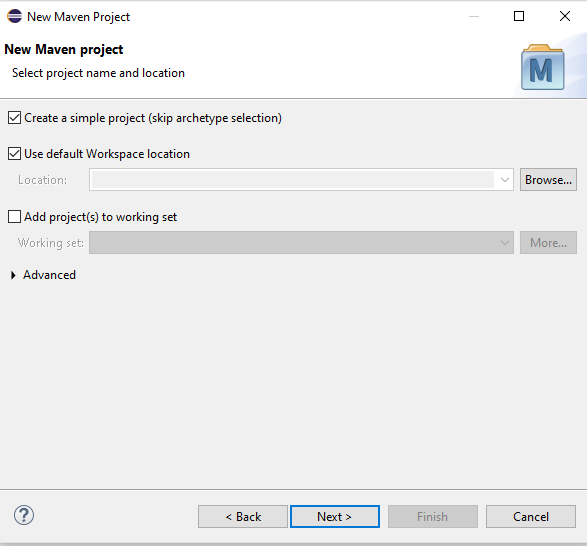
Lets convert our sample java-sample-lib directories to standard folder structure for test and app division
Maven – Introduction to the Standard Directory Layout
Also for intro you can use this
JUnit Hello World Example - Examples Java Code Geeks - 2021
Eclipse
Maven
Java
JUnit 4.12 (pulled by Maven automatically)
Lets give new sample java-sample-lib-mvnbut in this time we will create a maven project
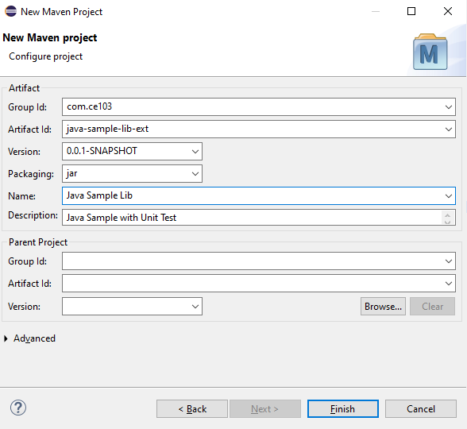

pom.xml file
<project xmlns="http://maven.apache.org/POM/4.0.0" xmlns:xsi="http://www.w3.org/2001/XMLSchema-instance" xsi:schemaLocation="http://maven.apache.org/POM/4.0.0 https://maven.apache.org/xsd/maven-4.0.0.xsd">
<modelVersion>4.0.0</modelVersion>
<groupId>com.ce103</groupId>
<artifactId>java-sample-lib-ext</artifactId>
<version>0.0.1-SNAPSHOT</version>
<name>Java Sample Lib</name>
<description>Java Sample with Unit Test</description>
</project>
we will add JUnit 5 for our project
<project xmlns="http://maven.apache.org/POM/4.0.0"
xmlns:xsi="http://www.w3.org/2001/XMLSchema-instance"
xsi:schemaLocation="http://maven.apache.org/POM/4.0.0 https://maven.apache.org/xsd/maven-4.0.0.xsd">
<modelVersion>4.0.0</modelVersion>
<groupId>com.ce103</groupId>
<artifactId>java-sample-lib-ext</artifactId>
<version>0.0.1-SNAPSHOT</version>
<name>Java Sample Lib</name>
<description>Java Sample with Unit Test</description>
<dependencies>
<dependency>
<groupId>org.junit.jupiter</groupId>
<artifactId>junit-jupiter-params</artifactId>
<version>5.7.1</version>
<scope>test</scope>
</dependency>
</dependencies>
</project>
it will automatically download libraries


Create java sample library in ce103 package, first create java package
In this package create library class


copy content from other library
package ce103;
public class JavaSampleLib {
public static String sayHelloTo(String name) {
String output = "";
if(!name.isBlank() && !name.isEmpty()){
output = "Hello "+name;
}else {
output = "Hello There";
}
System.out.println(output);
return output;
}
public static int sum(int a,int b)
{
int c = 0;
c = a+b;
return c;
}
public int multiply(int a, int b) {
return a * b;
}
}
Now lets create tests inf src/test/java


create a JUnit Case


you will simple template
package ce103;
import static org.junit.jupiter.api.Assertions.*;
import org.junit.jupiter.api.AfterAll;
import org.junit.jupiter.api.AfterEach;
import org.junit.jupiter.api.BeforeAll;
import org.junit.jupiter.api.BeforeEach;
import org.junit.jupiter.api.Test;
class JavaSampleLibTest {
@BeforeAll
static void setUpBeforeClass() throws Exception {
}
@AfterAll
static void tearDownAfterClass() throws Exception {
}
@BeforeEach
void setUp() throws Exception {
}
@AfterEach
void tearDown() throws Exception {
}
@Test
void testSayHelloTo() {
fail("Not yet implemented");
}
@Test
void testSum() {
fail("Not yet implemented");
}
@Test
void testMultiply() {
fail("Not yet implemented");
}
}
now lets copy tests from other projects

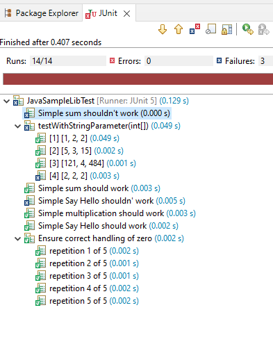

Thats a part of java unit testing...